jVLT -
outil d’apprentissage du vocabulaire
Vocabulaire
La liste de mots
Tout d’abord la liste de mots affiche tous les mots de votre votre liste de vocabulaire. Vous pouvez faire une recherche de mots spécifiques en utilisant le champ “Filtre” juste au-dessus du tableau listant les mots. Sélectionnez un critère dans le menu déroulant pour déterminer votre type de recherche. Ensuite vous pouvez saisir une expression dans le champ de texte et cliquer sur le bouton de validation ou bien appuyer sur la touche “Entrée” pour appliquer le filtre. Si vous cliquez sur le bouton marqué d’une croix, vous réinitialisez le filtre, ce qui réaffiche tous les mots.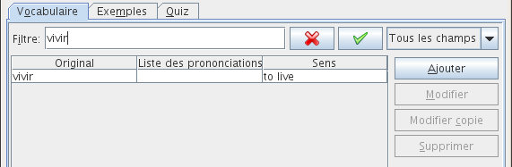
Si vous sélectionnez le “Filtre avancé” dans la liste déroulante, le bouton de validation est remplacé par un bouton “…”. Après avoir cliqué sur ce bouton, une boîte de dialogue apparaît : elle vous permet de définir un filtre plus sophistiqué.
De tels filtres sont composés d’un ou plusieurs critères de filtre, représentés chacun par une rangée qui contient trois colonnes. Dans la première colonne, vous sélectionnez les attributs (Original, Prononciation, etc) ; dans la deuxième colonne le type de comparaison, par exemple “est égal à”, “est plus grand que”, “est moins que”. Dans la dernière colonne on saisit une valeur. En fonction de l’attribut et du type de comparaison, la valeur sera du texte, un nombre, une date ou une liste. Vous pouvez ajouter ou supprimer des critères en cliquant respectivement sur les boutons “Plus” et “Moins”, et réinitialiser le filtre en cliquant sur “Réinitialiser”. En sélectionnant “Remplir tous ces critères” ou bien “Remplir un de ces critères”, vous décidez si un seul ou tous les critères doivent être appliqués.
Un filtre peut être sauvegardé en saisissant un nom dans le champ en haut de la boîte de dialogue, puis en sélectionnant “Nouveau/Mettre à jour”. Vous pouvez recharger un filtre sauvegardé en le sélectionnant dans le menu déroulant. Vous devez cliquer sur “Appliquer” pour l’activer. Si vous voulez modifier un filtre existant, chargez-le et faites vos modifications, puis cliquez sur le bouton “Nouveau/Mettre à jour”. Vous pouvez supprimer un filtre en cliquant sur “Supprimer”.
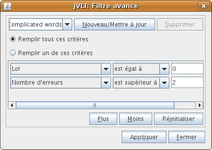
Selection des colonnes et tri
Si vous faites un clic droit sur un en-tête de colonne dans la liste des mots, un menu déroulant apparaît, vous permettant de trier la liste de mots en fonction de la colonne choisie.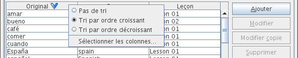
Ce menu déroulant contient aussi l’item “Sélectionner les colonnes…” : cet item permet à l’utilisateur de choisir les colonnes de la liste de mots. Les colonnes peuvent être sélectionnées ou bien désélectionnées en choisissant d’abord le nom de la colonne, puis en cliquant respectivement sur la flèche de gauche ou la flèche de droite. L’ordre des colonnes peut être modifié en utilisant les flèches vers le haut ou le bas. La colonne dont le nom se trouve tout en haut de la liste des noms de colonnes sélectionnés apparaîtra tout à gauche dans la liste de mots.
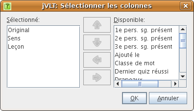
Vue détaillée
La vue détaillée affiche l’orthographe, la prononciation, la traduction et les exemples du mot sélectionné dans la liste. Dans l’onglet Apparence des Préférences vous pouvez choisir la quantité d’informations à afficher. Si un exemple est sélectionné (mots en rouge), la signification associée à l’exemple correspondant est surlignée. En cliquant sur le lien “Modifier” à la suite d’un exemple, vous arrivez sur l’onglet Exemples.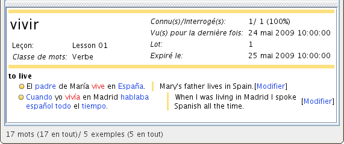
Afin d’ajouter plus d’informations à un mot, vous pouvez par exemple spécifier des fichier audio ou des images, ce qui est décrit dans la section suivante. Les fichiers apparaissent dans la vue détaillée en tant qu’icônes. Cliquer sur l’icône d’un fichier audio permet de l’écouter ; cliquer sur un fichier d’image ouvre une nouvelle fenêtre qui affichera l’image.
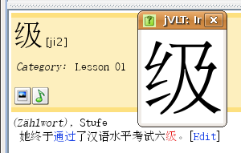
En cliquant sur les boutons “Ajouter”, “Modifier” ou “Supprimer” à côté de la liste de mots, vous pouvez respectivement insérer, modifier ou bien supprimer des mots.
Ajouter des mots
En cliquant sur le bouton “Ajouter” à côté de la liste de mots, vous pouvez ajouter des mots à votre vocabulaire. Dans la boîte de dialogue, vous voyez les trois champs de texte “Original”, “Prononciation” et “Leçon”. Vous devrez remplir le premier champ de texte, mais les deuxième et troisième ne sont pas obligatoires. Si le mot que vous allez saisir a plusieurs prononciations possibles, cliquez sur le bouton “Plus…”. Des leçons existantes peuvent être sélectionnées en cliquant sur la flèche à côté du champ de texte et en choisissant la leçon concernée dans le menu déroulant qui apparaît.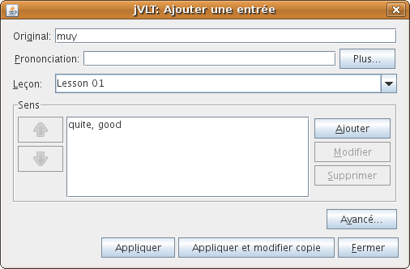
Un mot doit avoir au moins une signification. Vous pouvez ajouter des sens en cliquant sur le bouton “Ajouter” à côté de la liste et saisir du texte dans les champs “Traduction” ou “Définition”. La définition d’un mot est une note brève sur son type, son utilisation, etc. Vous n’êtes pas obligé de fournir du texte pour les deux champs, remplir un seul d’entre eux suffit. Si un mot a plus d’un sens, vous pouvez changer l’ordre des significations en utilisant les flèches haut et bas à gauche de la liste.
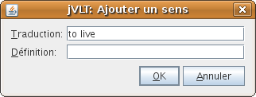
Quand vous en avez fini dans la saisie d’un mot, cliquez sur “Appliquer” et le mot sera ajouté à la liste. La boîte de dialogue ne se fermera pas et vous pourrez continuer d’ajouter des mots ou bien vous cliquerez sur “Fermer” pour revenir à la fenêtre principale.
Paramètres avancés
En cliquant sur le bouton “Avancé...”, vous pouvez fournir des propriétés supplémentaires au mot.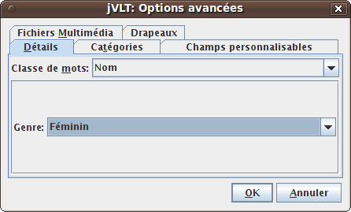
Détails d’un mot
Vous verrez l’onglet Détails de la boîte de dialogue en fonction de la langue que vous aurez choisie pour votre dictionnaire, ce que vous ferez en allant dans le menu “Édition > Propriétés”. Dans l’onglet Détails, vous pouvez sélectionner une classe (catégorie grammaticale) de mots, comme par exemple nom, verbe, etc. Pour certaines de ces catégories grammaticales il est possible de préciser des détails supplémentaires. Ainsi, dans l’exemple illustré ci-dessus, il est possible de choisir le genre d’un nom.Catégories
D’une manière facultative, vous pouvez attribuer un mot à des catégories (par exemple “Vocabulaire de la famille”). Vous pouvez choisir des catégories existantes dans la liste déroulante ou bien saisir une nouvelle catégorie. Ensuite, cliquez sur “Ajouter”.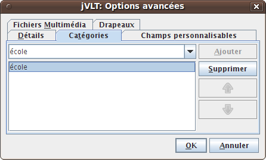
Champs personnalisables
Les champs personnalisables (définis par l’utilisateur) sont semblables
aux champs de l’onglet
Détails. Contrairement à ces derniers, ils peuvent porter un nom
défini par l’utilisateur. Pour ajouter un nouveau champ
personnalisable, vous devez d’abord double-cliquer sur une cellule vide
dans la colonne “Nom du champ”, puis choisir un nom existant dans la
liste déroulante ou bien saisir un nouveau nom. Ensuite vous
double-cliquez dans la cellule correspondante dans la colonne “Valeur
du champ” et vous en saisissez le contenu désiré. S’il y a plusieurs
champs personnalisables, vous pouvez en modifier l’ordre en choisissant
d’abord une ligne du tableau puis en cliquant sur les boutons
représentant des flèches haut et bas.
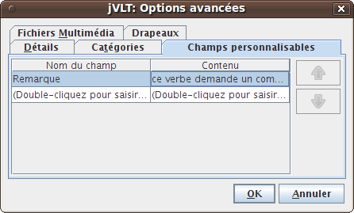
Fichiers multimédia
Vous pouvez aussi lier des fichiers audio et image à un mot, comme
par exemple un fichier WAV qui contient la prononciation. Il est
possible d’indiquer un chemin relatif
(par ex. “images\image.gif”) ou absolu (par ex.
“D:\jvlt\images\image.gif”) vers un fichier en
(dé)cochant la case “Utiliser un chemin relatif”. Si vous choisissez la
première
option, le chemin sera relatif à l’endroit où se trouve votre
fichier-dictionnaire. Ainsi, si votre dictionnaire se situe ici :
“D:\jvlt\dict.jvlt” et l’image ici : “images\image.gif”, alors jVLT
cherchera l’image ici : “D:\jvlt\images\image.gif”. Si jVLT n’arrive pas à afficher ou lancer des fichiers d’un certain type, vous pouvez précisez des commandes externes dans les Préférences.
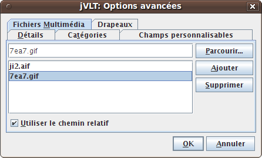
Modifier des mots
Vous pouvez éditer un mot d’abord en le sélectionnant dans la liste de mots , puis en cliquant sur le bouton “Modifier” à droite de la liste. Modifier un seul mot implique à peu près les mêmes étapes que l’ajout d’un mot. Cependant il y a une différence : si vous voulez supprimer un sens, vous devez vous assurer qu’il n’est relié à aucun exemple.Si vous sélectionnez plusieurs mots avant de cliquer sur “Modifier”, soit en utilisant la touche Ctrl ou la touche Majuscule tout en cliquant sur les mots, vous pouvez modifier la leçon et les paramètres avancés pour tous les mots d’un coup. Cependant vous devez faire attention : les nouveaux paramètres effacent toujours les anciens. Ainsi, si vous éditez deux mots à la fois, l’un appartenant à la leçon “A”, l’autre à la leçon “B” et que vous les attribuez à une nouvelle leçon “C”, alors ils n’appartiendront plus aux leçons “A” et “B”.
Supprimer des mots
Afin de supprimer des mots, vous devez d’abord les sélectionner dans la liste de mots (vous pouvez sélectionner plusieurs mots grâce aux touches Ctrl ou Majuscule). Après avoir cliqué sur le bouton “Supprimer” à droite de la liste de mots, une alerte apparaîtra vous demandant de confirmer votre choix. Notez bien que tous les liens allant des exemples vers les mots supprimés seront eux aussi supprimés. si un exemple perd tous ses liens, il sera alors supprimé également. Le nombre d’exemples allant être supprimés et / ou modifiés s’affichera dans le message d’alerte.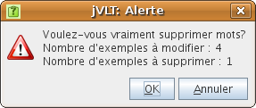
Pour obtenir la liste des exemples liés à un mot spécifique, vous pouvez l’afficher dans la vue détaillée.